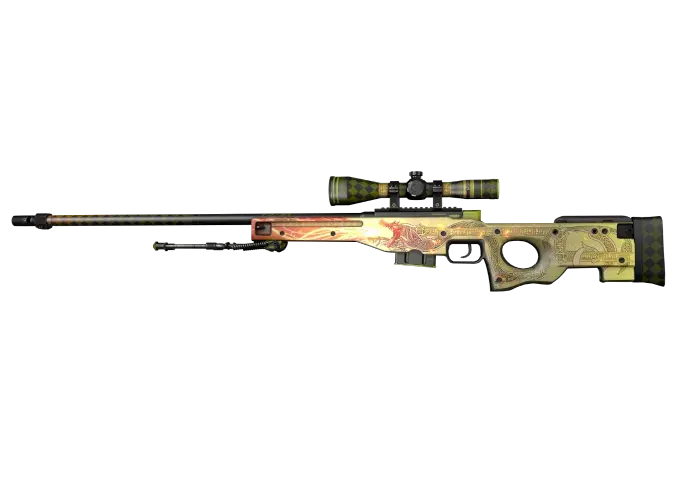
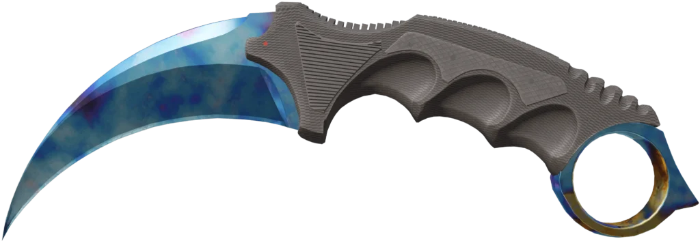
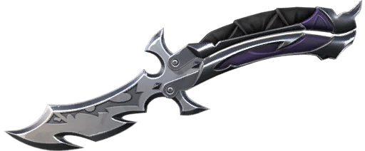

DRAGON LORE
KARAMBIT
REAVER
Aplicação Web // E-Commerce & Games
ClutchSkins — Skin Store
Plataforma temática para exibição, filtragem e catálogo de skins colecionáveis de alta raridade de Counter-Strike 2 e Valorant, com sistema interativo de cadastro e login.
▸
Autenticação dupla com alternância dinâmica entre Login e Cadastro via JS
▸
Vitrine categorizada por jogos de eSports (Counter-Strike e Valorant)
▸
Selos de raridade (Oculta, Sigilosa, Extraordinário, Exclusivo, Ultra)
HTML5 Semântico
CSS3 Dark UI
JavaScript Puro
Manipulação de DOM